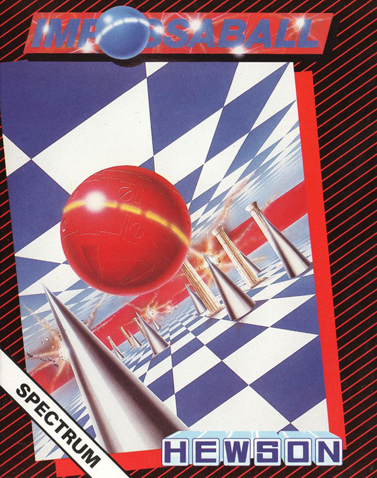
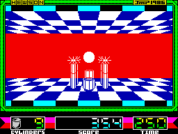

Impossaball


{kind=link}

| Publisher: | Hewson Consultants |
| Price: | £8.95 |
| Year: | 1987 |
| Source: | CRASH, Issue 37 |
Ball games were very popular during 1986. Hewson kickoff the New Year with a game of this type, written by a newcomer to the Spectrum programming scene. This latest spherical scenario Impossaball, features a ball travelling through a 3D scrolling environment.

with on the first level, as the
spherical hero despatches another
spike-guarded protuberance. Could
this game have been partly inspired
by the Spiky-haired Ones on ZZAP!...
This particular bouncing ball has to be negotiated down eight corridors, which become progressively more cluttered with obstacles. Cylinders protrude from the floor and ceiling and must be knocked level with the surface by bouncing onto them. The game is played against the clock, and the status area keeps track of the number of cylinders remaining, the amount of time left to complete the current level and the score so far.
Left to its own devices, the ball bounces up and down on the spot — pressing fire increases the height of the bounce up through the four levels available, while releasing fire allows the bouncing to subside. A shadow under the ball helps you judge its position in the corridor and the height of the bounce when manoeuvring. Bouncing the ball into stationary objects causes it to rebound — unless you choose a deadly artefact, in which case one of the four lives available is lost and the ball returns to the start of the current corridor. After an untimely death, cylinders that have been dealt with don’t have to be tackled again — play resumes with the objects in the corridor remaining as they were when your ball burst.
Life as a cylinder-bashing ball is complicated by deadly spikes and murderous plasma fields. Spikes tend to live on the top of poles — bouncing into a pole has no harmful side-effects, but the spiky orbs themselves are definitely dangerous. Plasma fields can be stationary or may move around, following preset patrol patterns. Fire bolts appear after the first level, leaping into the air at regular intervals from either the ceiling or the floor.
On the plus side, magic rings appear on the floor and ceiling. Bouncing into one while it is flashing earns some extra time on the current corridor, but once the magic power has been extracted the ring joins the spikes and plasma, becoming deadly to the touch.
Points are scored for cylinders that have been destroyed and for travelling down the length of a corridor: an extra life is awarded for every 5,000 points collected. When all the cylinders on a level have been destroyed it is possible to cross the finish line — you then automatically flip up to the next level where the going gets even tougher. It looks like 1987 is going to be a busy year for spherical heroes...
CRITICISM
“‘Oh no!’ I hear you cry ‘Not another bouncy ball game’. Don’t fret — this is different, It really does appeal to me — there isn’t a scenario, but who cares? This is compelling enough without any plot. Graphically, Impossaball is very original. The playing area is superbly drawn, the scrolling is excellent and there is no colour clash. The sound is also very good, with a multitude of effects — and the tune on the title screen is worth listening to (which is more than can be said for most title tunes). Another ace from Hewson.”
BEN
“Hewson have always come up with original and good games (with the exception of City Slicker) — Impossaball is the icing on the cake. Graphically, I would say that this is one of their most inviting products. The colour is cleverly used and avoids attribute problems. Unfortunately the sound is limited, but it serves its purpose. Impossaball is very easy to get into, and extremely playable. As with most Hewson games, it is very addictive and good fun to play. Hewson have done it again. You’ll be playing this one for months.”
PAUL
“I must confess that this one didn’t really grab me, but the smooth, interesting graphics convinced me that it was worth playing a little bit. Indeed it was! Despite the slight boredom of the first few games, Impossaball really kept me at it for a long while. There is more to this than simple arcade reactions (though these are a major part of the gameplay), a bit of brain-power is also called for. The combination of these two elements makes the game highly addictive and well worth getting. Recommended.”
MIKE
COMMENTS
| Control keys: | Left/Right-handed options — Q/O left, W/P right, P/Q ‘into’ screen, L/S ‘out of’ screen, X/M fire |
| Joystick: | Kempston, Cursor, Interface 2 |
| Use of colour: | Effective |
| Graphics: | Smooth scrolling and animation; neat inertia effect after collisions |
| Sound: | Good title tune and tidy effects |
| Skill levels: | One |
| Screens: | Eight scrolling levels |
| General rating: | An original, addictive game that is more than just another bouncy-ball program |
| Presentation: | 89% |
| Graphics: | 90% |
| Playability: | 90% |
| Addictive qualities: | 90% |
| Value for money: | 88% |
| Overall: | 89% |